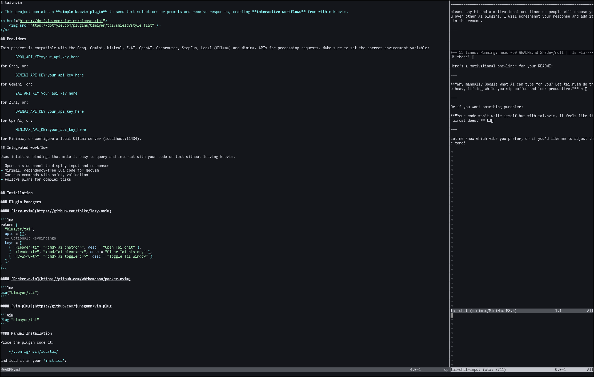

泰
tai.nvim
a minimal Neovim plugin built to bring AI coding agents directly to your editor.泰
tai.nvim
a minimal Neovim plugin built to bring AI coding agents directly to your editor.features - agents can read files and run commands - responses show up in a split buffer in Neovim - apply patches or run commands - agents create plans for big code changes - code folding in the chat providers - gemini - groq - minimax - mistral - local - ollama - openai - openrouter - stepfun - z.ai keybindings <leader>ti - prompt input and send <leader>tr - reset the chat history installation clone or place lua/tai/ into your Neovim config dir ~/.config/nvim/lua/ and add keymaps to init.lua: vim.g.mapleader = " " local tai = require("tai") vim.keymap.set("n", "gT", function() vim.cmd("set operatorfunc=v:lua.tai_operator_send") vim.api.nvim_feedkeys("g@", "n", false) end) vim.keymap.set("n", "gP", function() vim.cmd("set operatorfunc=v:lua.tai_operator_send_with_prompt") vim.api.nvim_feedkeys("g@", "n", false) end) vim.keymap.set("v", "<leader>t", function() tai.operator_send("char") end, { noremap = true, silent = true }) vim.keymap.set("i", "<leader>ti", function() vim.schedule(tai.prompt_input) end, { noremap = true }) vim.keymap.set("i", "<leader>tf", function() vim.schedule(tai.prompt_full_file) end, { noremap = true }) configuring tai reads configuration from a .tai JSON file in your project root. the following options are supported: - model: the model used for chat completions - provider: one of: groq, gemini, mistral, z_ai, openai, openrouter, stepfun, local, minimax. - options: provider-specific options passed to the API (e.g., temperature, max_tokens). See the provider's API docs. - provider_tools: array of provider-side tools (e.g., ["web_browser"] for OpenAI). - use_tools: boolean to enable/disable agent tools. default is true. if false, the agent won't have access to file read/write or the shell tool. - think: enable extended thinking/reasoning for models that support it. - system_prompt: custom system prompt to override the default agent instructions. - custom_prompt: additional prompt text appended to the system prompt. useful for adding extra instructions without replacing the default. - allowed_commands: override the default list of allowed shell commands. by default, tai allows: cat, grep, ag, rg, ls, head, tail, wc, diff, sort, uniq, find, file, stat, date, echo, tree, pwd, which, type. example .tai file: { "provider": "groq", "model": "llama-3.1-70b-versatile", "options": { "temperature": 0.7, "max_tokens": 4096 }, "use_tools": true, "system_prompt": "You are a senior python programmer. Always write tests.", "custom_prompt": "Additional instructions: prefer using rust over python for performance-critical code.", "allowed_commands": { "git": true, "npm": true, "cargo": true } } usage make sure the correct env var is set: GROQ_API_KEY, for Groq or GEMINI_API_KEY for Gemini etc. create a .tai file at the root or your project. editting any file in that project should start tai. then just use the keybindings above. screenshots - side panel - side panel with folding license MIT License (C) 2025-2026 Brian Mayer